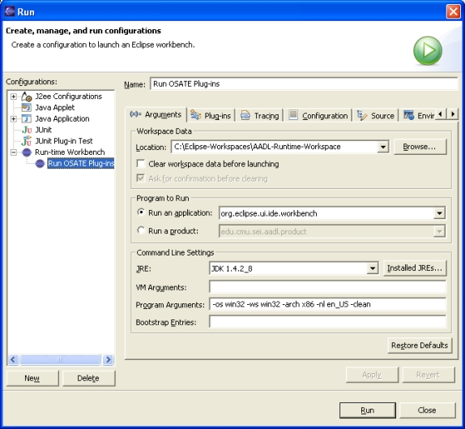
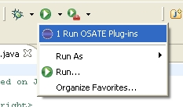
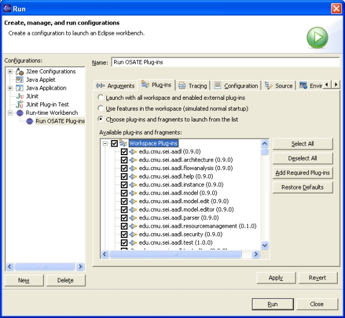
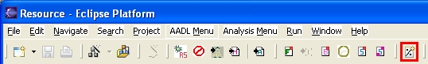
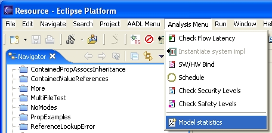
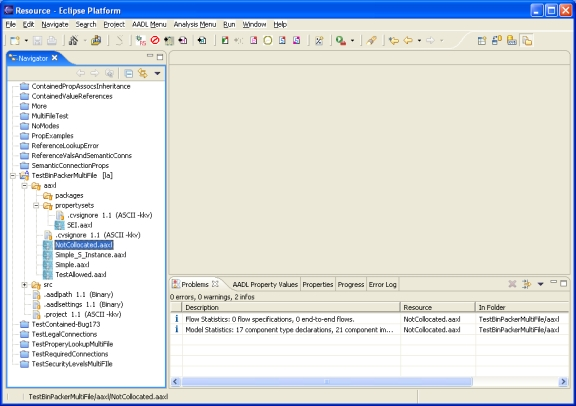
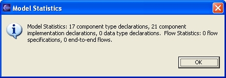
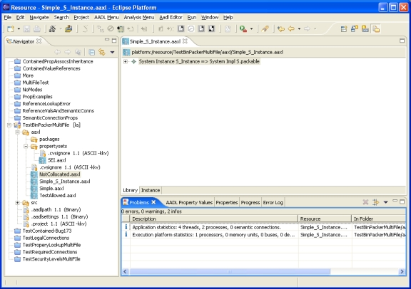

Previous
Next
Previous
Next 
| 3.6 Executing the Model Statistics Plug-in |
The
simplest way to try out our plug-in is by executing a new Eclipse environment that loads
our new plug-in. Eclipse calls this executing a Run-time Workbench. To execute
a run-time
workbench
- Select Run | Run… to open the Run dialog box.
- Select Run-time Workbench in the Configurations list.
- Click on New to create a new run-time workbench configuration. A set of tabbed panes appears to the right of the list of configurations enabled enabling the configuration to be customized. See Figure 7: Creating a run-time workbench configuration..
- Enter a name for the configuration. Here we have used Run OSATE Plug-ins.
- Choose a directory to use as the workspace for the workbench. Run-time workspaces have their own independent workspaces. The default workspace is a sibling of the current workspace: it is named runtime-workspace and is in the same directory as the current workspace.
- Click on Run to execute the newly defined run-time workbench. To save the changes without running the configuration, click on Apply and then Close.

Figure 7: Creating a run-time workbench
configuration.
To
run the configuration select it from the list of configurations and click on Run.
Once the
configuration has been executed it can be run again by choosing it from the Run toolbar
menu, which keeps track of the recently executing configurations; see Figure 8. Simply clicking
on the Run toolbar icon will reexecute the most recently executed configuration.

Figure 8: The Run toolbar
menu.

Figure 9: Choosing which plug-ins
to include in the run-time workbench.
By
default, the run-time workbench includes all the plug-ins that the host Eclipse includes, plus
those defined by projects in the workspace. You can pick exactly which plug-ins are included
by the run-time workbench using the Plug-ins pane; see Figure 9. Other useful settings
when
configuring the run-time workbench are JRE and VM Arguments. The first
lets you specify
which Java Runtime Environment (JRE) executes the run-time workbench, which is useful if you
need to make sure your plug-in works correctly under specific JREs. The menu lets you
choose among the JREs that are currently installed on your system.
Figure 10: Setting the initial and
maximum heap sizes of the JVM.
The VM Arguments setting allows you to pass arguments to the JVM that executes the run-
time workbench, and is useful for increasing the initial and maximum heap sizes; see Figure 10.
Increasing the maximum heap size is useful when analyzing large models. The command line
options relevant to the heap size and their descriptions (taken from Sun’s documentation for the
java application) are shown below. A complete description of all the JVM arguments
is a
beyond the scope of this document.
-Xmsn
Specify the initial size, in bytes, of the memory allocation pool. This value must be a multiple of 1024 greater than 1MB. Append the letter k or K to indicate kilobytes, or m or M to indicate megabytes. The default value is 2MB. Examples:
-Xms6291456
-Xms6144k
-Xms6m
-Xmxn
Specify the maximum size, in bytes, of the memory allocation pool. This value must a multiple of 1024 greater than 2MB. Append the letter k or K to indicate kilobytes, or m or M to indicate megabytes. The default value is 64MB. Examples:
-Xmx83886080
-Xmx81920k
-Xmx80m
| 3.6.1 Model Statistics in Action |
As
specified in the plug-in manifest file, our model statistics plug-in presents an icon in the
toolbar as well as a menu item in a new Analysis Menu menu. Figure 11 and Figure 12
show
examples of the toolbar icon and menu item, respectively. Here we are running the model
statistics plug-in along with other OSATE plug-ins. Observe that all the plug-in actions appear
in the same Analysis Menu menu item even though they all independently declare the menu
and their location within it in their respective plug-in manifest files.

Figure 11: The toolbar icon for
our model statistics plug-in. Icon is on the far-right, highlighted in red for clarity.

Figure 12: The menu item for our
model statistics plug-in.
As
mentioned previously, the model statistics plug-in is executed by first selecting an AADL
model or model element. Until a model or model element is selected, our action remains
disabled in the toolbar and pull-down menu. A model is selected by selecting an .aaxl file in
the Navigator view. A model element is selected by selecting it in an open editor.
Then the
model statistics action can be executed by clicking on the toolbar icon or choosing Model
statistics from the Analysis Menu.
Figure
13 shows the results of running the model statistics plug-in over the all the declarative
models in the workspace. In this case, we have selected the AADL specification
NotCollocated.aaxl and run the model statistics action. It is a declarative model, so the
declarative contents of the workspace, i.e., the property set SEI.aaxl, and the AADL
specifications NotCollocated.aaxl, Simple.aaxl, and TestAllowed.aaxl are analyzed;
the instance model Simple_S_Instance.aaxl is not analyzed.
The results are shown as
markers in the Problems view. The dialog box reporting the same results is shown in
Figure
14.

Figure 13: Markers (in the Problems
view) recording the model statistics for the declarative models in the workspace, i.e.,
the models in project TestBinPackerMultiFile.

Figure 14: Dialog box reporting
the model statistics for the AADL workspace shown in Figure 13.
Figure
15 shows the results of running the model statistics plug-in over the instance model in
Simple_S_Instance.aaxl. In this case, we opened the model in an editor, selected the root
node of the model and then executed the model statistics action. The dialog box reporting the
same results is shown in Figure 16.

Figure 15: Markers (in the Problems
view) recording the model statistics for the instance model Simple_S_Instance.

Figure 16: Dialog box reporting
the model statistics for the AADL instance model shown in Figure 15.